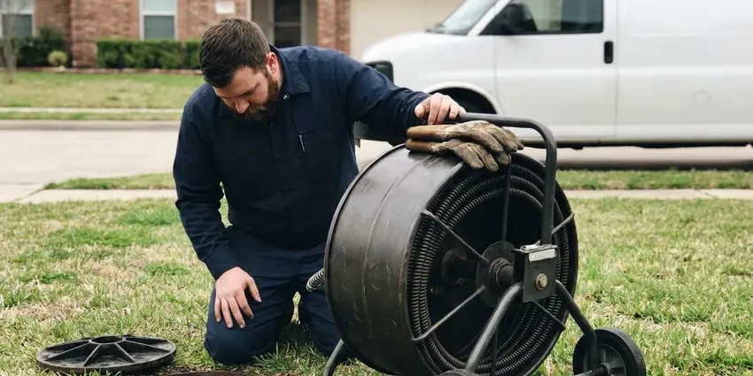

Commercial Plumbing in Knoxville, TN
BGV Plumbing delivers dependable commercial plumbing solutions for businesses across Knoxville, TN.
- After-Hours Scheduling
- Local Tennessee Experts
- Local Tennessee Experts
- Certified Backflow Testers

Get a Commercial Plumber You Can Count On in Knoxville, TN.
BGV Plumbing offers prompt, professional commercial plumbing services for businesses of all sizes.
Professional Commercial Plumbing Services for Businesses in Knoxville, TN
At BGV Plumbing, we provide robust commercial plumbing solutions designed to meet the tough demands of Tennessee businesses in Knoxville. From high-capacity water heaters to industrial-grade drain systems, our team makes sure your commercial infrastructure functions flawlessly.
Our expertise includes:
- Commercial drain clearing and hydro-jetting
- Grease interceptor maintenance and high-pressure hydro jetting of kitchen lines
- Large-scale water heater repair and replacement

Additional Plumbing Maintenance Services in Knoxville, TN
Our maintenance and specialty plumbing services in Knoxville, TN protect your home year-round and extend the life of every system.


Customers
Why Choose BGV Plumbing for Commercial Plumbing in Knoxville, TN?
We prioritize minimizing downtime for your business, recognizing that every hour counts. Our experienced technicians deliver swift, effective solutions to get your commercial plumbing back in optimal condition quickly.
- 24/7 Availability, Commercial plumbing emergencies don't wait for business hours, so neither do we. Our team is on call to address critical problems anytime.
- Detailed Records, You get invoices, photos and test reports for every service visit.
- Specialized Tools, Our technicians work with industrial-grade equipment like hydro-jetters and video inspection cameras for thorough commercial diagnostics and repairs.
Citywide Coverage
BGV Plumbing serves every commercial district and business park throughout Knoxville and its surrounding areas. Whether your business is in the downtown core or an industrial park, our team is ready to provide expert commercial plumbing services.
Experienced Team
Each member of our BGV Plumbing commercial plumbing crew is licensed and insured, bringing years of dedicated experience to every job. We ensure our team stays updated on the latest commercial plumbing technologies and Tennessee codes to provide top-quality service.
Safety-First Approach
BGV Plumbing places a high emphasis on code compliance for all commercial plumbing work in Knoxville, TN. We ensure that every repair, installation, or maintenance service meets or exceeds current building and health codes to protect your business and its occupants.
Trusted Certified Knoxville Plumbing Services Professionals
At BGV Plumbing, we take pride in providing certified plumbing services throughout Knoxville, TN. Backed by recognized industry credentials, our experienced plumbers combine technical skill with genuine customer care. Whether it is repair, installation, or maintenance, we follow strict safety and quality standards to deliver lasting results you can trust.
Call Us Now PHCC Plumbing Contractor Recognition
PHCC Plumbing Contractor Recognition Better Business Bureau (BBB) Accreditation
Better Business Bureau (BBB) Accreditation Angi Certified Pro
Angi Certified Pro ISO 9001 Quality Management Certification
ISO 9001 Quality Management CertificationProfessional Commercial Plumbing Services in Knoxville, TN
Tenant Improvement and Build-Out Plumbing in Knoxville, TN
When a space changes hands, the plumbing often needs to change too. We install new restrooms, break rooms, mop sinks and kitchen fixtures for tenant improvements. Our team works from your plans, coordinates with general contractors and passes inspections on schedule. We also cap and abandon old lines properly.

Emergency Commercial Plumbing in Knoxville
A plumbing emergency can stop business operations, leading to lost revenue and potential property damage. BGV Plumbing offers rapid-response emergency commercial plumbing services throughout Knoxville, TN. Whether it's a major burst pipe, a severe sewage backup, or a critical water heater failure, our team is equipped to handle urgent situations 24/7. We arrive quickly, assess the problem, and implement immediate solutions to mitigate damage and restore functionality, helping your business get back on track with minimal downtime.
Backflow Testing and Repair in Knoxville
Most water providers require annual testing of backflow prevention assemblies on commercial properties. We test reduced pressure zone, double check and pressure vacuum breaker assemblies with certified gauges. When a device fails, we rebuild it with manufacturer kits from Watts, Wilkins or Febco. We submit the results to your water provider so you remain in compliance.
Commercial Water Heaters and Boilers in Knoxville, TN
Commercial kitchens, gyms and multi-family buildings need large amounts of hot water. We service and install high-input tank water heaters, tankless racks and boiler-fed systems with storage tanks. Mineral buildup from harder water can shorten the life of water heaters and leave scale on faucets, showerheads and dishwasher parts. Mineral scale can build up in these systems fast, so we offer descaling and flushing on a schedule. We also install mixing valves to deliver safe temperatures at hand-washing sinks.
Drain Jetting and Sewer Camera Work in Knoxville
Commercial drains carry grease, paper and debris that build up faster than in homes. We use high-pressure jetters to scour main lines and camera equipment to find breaks, roots and bellies. Video records help you plan repairs and budget for capital work. Preventive jetting reduces emergency backups.
Commercial Restroom Plumbing in Knoxville
Busy restrooms take a beating, and a broken flushometer or leaking urinal frustrates customers. We repair and replace Sloan and Zurn flush valves, sensor faucets, wall-hung toilets and carriers. We also install ADA-compliant fixtures and grab bar backing during remodels. Quick repairs keep your facilities clean and open.
Commercial Plumbing Costs and Maintenance Plans in Knoxville, TN
Backflow tests typically cost $75 to $175 per assembly, while grease line jetting often runs $350 to $900 depending on length and buildup. Emergency after-hours service carries a higher rate. Preventive maintenance plans spread costs evenly and cut down on surprise repairs. We give you written proposals so you can budget with confidence.

Grease Trap Installation & Cleaning in Knoxville
Restaurants and food service establishments in Knoxville rely on properly functioning grease traps to prevent fats, oils, and grease (FOG) from entering the sewer system. BGV Plumbing offers expert grease trap installation, repair, and regular cleaning services. We make sure your grease trap is correctly sized for your business's needs and maintained to comply with local FOG regulations, preventing costly blockages and potential fines from the city.
Commercial Plumbing Near Me in Knoxville, TN
Businesses across Knoxville regularly choose BGV Plumbing for their commercial plumbing needs because we are truly local and understand the unique demands of commercial properties here. Our licensed plumbers are always in the vicinity, ready to provide prompt, professional service that keeps your business running smoothly, without the long waits often associated with larger, out-of-town companies.
Business owners searching for commercial plumbing near me can count on BGV Plumbing for fast response in Knoxville. Our trucks carry commercial parts and backflow test kits. Most service calls are handled without a return trip.
BGV Plumbing at a Glance
- Licensed and insured plumbers serving Knoxville, TN
- 24/7 emergency service with same-day scheduling
- Clear written estimates, no hidden fees
- 4.9-star rated by 932+ Tennessee customers
Knoxville Map
Knoxville Information
- Population
- 198,162
- Area codes
- 865/423/931
- Service area
- Knoxville and communities within 40 miles
- Nearby
- Morristown, Cleveland, Kingsport, Johnson City
For businesses in Knoxville, TN, durable commercial plumbing is essential to withstand heavy usage, and our services are built to address local water conditions and the operational needs of your business.
Expert Services
Trust our professionals for reliable BGV Plumbing solutions in Knoxville, TN.
Our Specialized Plumbing Services in Knoxville, TN
At BGV Plumbing, we provide a complete range of plumbing services across Knoxville, TN. From leak detection to full system installations, our team ensures fast, precise, and affordable service for both residential and commercial properties. Explore our core services below:


How Our Commercial Plumbing Service Process Works in Knoxville, TN
Here is how we handle commercial plumbing calls from first contact to final report.
Request a Quote
Contact BGV Plumbing at (615) 518-0893 to schedule a commercial plumbing service or request an emergency response. We'll gather details about your issue and dispatch a qualified technician to your Knoxville business.
On-Site Assessment
Our commercial plumber arrives on time to your business in Knoxville, conducting a thorough diagnosis of the plumbing problem using specialized tools. We will clearly explain the issue and propose the most effective solution.
Expert Service
With your approval, our technician will perform the necessary commercial plumbing repairs, installations, or maintenance. We use quality parts and follow industry best practices, delivering lasting results for your Knoxville business.
Frequently Asked Questions About Commercial Plumbing in Knoxville
The cost of commercial plumbing services in Knoxville, TN varies widely depending on the complexity of the job. Minor repairs like a clogged drain might range from $150 to $400, while a commercial water heater replacement could be $2,000 to $8,000 or more. We provide transparent, upfront pricing after a thorough on-site assessment.
Many restaurants need service every one to three months depending on volume. Local pretreatment rules may set a schedule, and we can help you stick to it.
Yes, BGV Plumbing has specialized expertise in a wide range of commercial plumbing equipment. We regularly service, repair, and install grease traps, industrial pumps, backflow prevention devices, and commercial water filtration systems for businesses across Knoxville.
Yes, we install plumbing from plans, pull permits and coordinate with your general contractor. We schedule inspections to keep your opening date on track.
Absolutely. BGV Plumbing offers 24/7 emergency commercial plumbing services throughout Knoxville to address urgent problems like burst pipes, significant leaks, or overflowing toilets that could severely impact your business operations. Call us anytime for rapid response.
Staff can handle simple tasks like replacing toilet seats or clearing minor clogs. Backflow work, gas lines, water heaters and code-regulated repairs require a licensed plumber.
BGV Plumbing services and installs all major brands of commercial water heaters common in Tennessee, including AO Smith, Rheem, Bradford White, and State Water Heaters. Our technicians are trained on the latest models and technologies to provide efficient and reliable hot water for your business.
For most businesses in Knoxville, we recommend a complete commercial plumbing inspection at least once a year. High-traffic establishments like restaurants or manufacturing plants might benefit from quarterly inspections to prevent major problems and ensure compliance with health and safety regulations.
What People Are Saying About Our Plumbing Experts?

Laura S.
I scheduled a water heater replacement, and the team made the process smooth and affordable. The new unit works perfectly, and they cleaned up after completing the job.
Water Heater Replacement · Chattanooga, TN
Patricia H.
We had a slab leak that two other companies could not find. BGV Plumbing located it in under an hour, explained our options, and the price matched the quote to the dollar.
Slab Leak Repair · Morristown, TNSofia M.
Two new toilets installed in one visit, no mess left behind, and the tech even adjusted a faucet he noticed was dripping. Fair pricing and really friendly.
Toilet Installation · Chattanooga, TN
Emily R.
I called BGV Plumbing for plumbing repair, and the technician was fast, polite, and thorough. They explained the problem clearly and fixed it the same day. I will definitely hire them again. Highly recommended!
Plumbing Repair · Kingsport, TN
Mark T.
When our office needed drain cleaning, BGV Plumbing provided quick, reliable service. The plumber arrived on time and made sure every drain flowed perfectly before leaving. Very satisfied.
Drain Cleaning · Bristol, TN
James P.
Our commercial plumbing system had a leak under the sink, and BGV Plumbing handled it professionally. The plumbers arrived quickly and restored everything without disruption to our customers.
Commercial Plumbing · Kingsport, TN